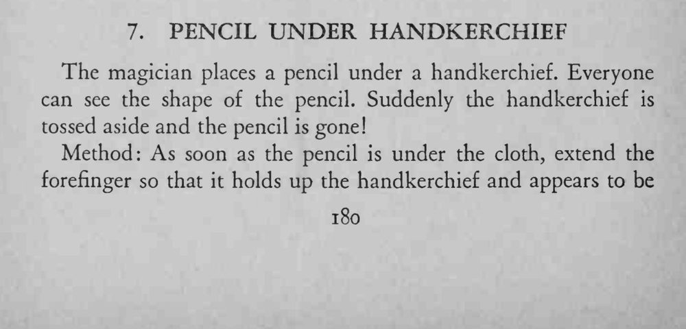
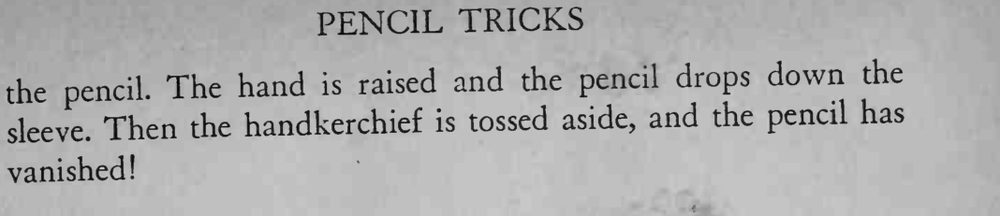

铅笔被手帕盖住，观众还能看见它顶起的形状；手帕猛地一掀，铅笔却已经不翼而飞。
原文此处不全；关键是食指撑出的形状要与铅笔逼真，掩护铅笔滑入袖中。


The magician places a pencil under a handkerchief. Everyone can see the shape of the pencil. Suddenly the handkerchief is tossed aside and the pencil is gone! Method: As soon as the pencil is under the cloth, extend the forefinger so that it holds up the handkerchief and appears to be The hand raised and the pencil drops down the the pencil. is Then the handkerchief is tossed aside, and the pencil has sleeve. vanished!